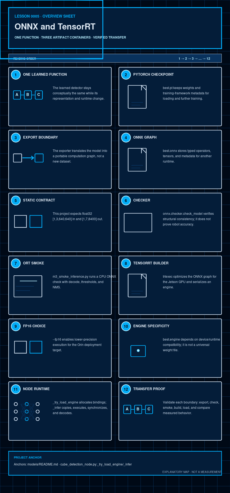

Software · AI · Robotics / Learning system
Lesson 0005 — ONNX and TensorRT
The detector moves through three representations because training, exchange, and Jetson execution have different contracts. Follow the artifact boundary and verify each one.
How to use this lesson
Read the explanation, inspect the visual, make a prediction, and then compare it with the repository evidence. The goal is a model of this project that you can explain—not a list of framework slogans.
Prerequisites and scope
Start after the training/checkpoint model in Lesson 0003 and the exact tensor contract in Lesson 0002. This lesson treats deployment like a compiler pipeline; CUDA kernel and TensorRT tactic internals are not required.

The question this lesson answers
Why does the detector travel through best.pt → best.onnx → best.engine instead of running the training checkpoint directly on the robot? Each file represents the same learned behavior in a different container, with a different compatibility and verification boundary.
By the end, you should be able to
- separate model architecture, learned weights, serialized graph, and compiled engine;
- read the input/output tensor contract and explain static versus dynamic shapes;
- distinguish structural validity, executable validity, numerical equivalence, task behavior, and target-device compatibility;
- explain why FP16 and TensorRT may change numerical results without retraining;
- identify exactly what the current smoke scripts verify and what remains unverified.
Mental model in software terms
.pt is framework-native model state, ONNX is a portable intermediate representation, and a TensorRT engine is a hardware/runtime-specific compiled artifact. They aim to represent the same learned function, but conversion is a real transformation and must be tested—not assumed equivalent because the filenames share best.
Minimal tensor and graph vocabulary
A tensor is a typed multidimensional array. An operator is one graph computation such as convolution, addition, reshape, or activation. A graph connects operators and tensors into the forward pass. Serialization stores that structure and its weights in a file. A runtime loads it and allocates host (CPU) and device (GPU) memory to execute it.
Three operations that are easy to confuse
Serialization writes an existing representation to bytes. Export translates a framework model into another graph format. Compilation specializes and optimizes that graph for a runtime and target device. None of these operations trains new cube knowledge.
1. One learned function, several containers
Training is done in PyTorch/Ultralytics. ONNX is an exchange representation. TensorRT is the Jetson-oriented optimized runtime artifact. The goal of export is not to retrain the detector; it is to preserve the computation while changing how another environment executes it. [ONNX · TensorRT · project artifacts]
A successful export preserves the input/output meaning closely enough that downstream verification remains valid.
“Same learned function” is an engineering intention, not byte-for-byte identity. Export may replace operators, fold constants, fuse layers, or change floating-point precision. Equivalence must therefore be defined with tolerances and decoded outputs on identical test inputs.
2. What is inside best.pt?
The M2 file is an Ultralytics YOLOv5s detection PyTorch checkpoint containing learned parameters and framework-specific model metadata. The raw graph has 9,123,353 parameters; fusing convolution and batch-normalization layers for inference yields the documented 9,112,697. These are two representations of the same model, not an unresolved discrepancy. A current load reports epoch=-1 and no optimizer state, so this stripped deployment copy should not be presented as a complete resumable training state.
The class order is also a project boundary: the running artifact uses blue/green/red indices, while docs/project-definition.md still lists red/green/blue. Do not silently use the stale order when interpreting outputs or preparing another training run.
It is a training-side artifact, not automatically a Jetson TensorRT engine. Keeping it unchanged also gives the project a rollback point when a later candidate model is tested.
3. ONNX is an exchange graph
ONNX represents computation as typed inputs, outputs, and operator nodes. It lets a runtime such as ONNX Runtime or TensorRT consume a graph without loading the original training framework's full execution path. That portability is useful, but the graph still has an exact input shape, output layout, operator set, and class-name contract.
An ONNX opset specifies the versions and semantics of operators used by the graph; the IR version describes the ONNX file's graph representation. A runtime must support both the operators and their versions. “The file opens” does not guarantee that every target runtime implements every node.
The ONNX file is larger than this project's .pt file because file size depends on serialization format, stored dtypes, metadata, and graph representation—not only parameter count. Smaller does not automatically mean faster or more accurate.
4. The current export contract
The recorded M3 artifact uses a static batch of one and a 640×640 model input. Its checkpoint is a YOLOv5u-style, anchor-free model even though the project shorthand often says “YOLOv5s”:
| Boundary | Recorded contract |
|---|---|
| Input | images, float32 [1, 3, 640, 640] |
| Output | output0, float32 [1, 7, 8400] |
| ONNX | IR 7, opset 13, dynamic=False, simplify=False |
| Classes | blue_cube, green_cube, red_cube in that order |
These values are not decorative metadata. Lesson 0002 showed that the output shape determines how the decoder reads candidate rows. A changed export contract requires a new verification pass.
NCHW names the input axis order: batch count, color channels, height, width. The node begins with a camera array in height–width–channel order, then normalizes pixel values, transposes the axes, and adds the batch dimension. Shape equality alone is insufficient if channel order, scaling, dtype, or letterboxing differs.
5. Why static 640×640 is deliberate here
The ROS node letterboxes each camera frame to the configured imgsz=640. The export, ONNX smoke script, TensorRT engine, and node therefore share the same model canvas. A static shape reduces runtime shape negotiation and keeps the deployment path explicit. It also means that changing image size is a model-contract change, not just a UI preference.
A dynamic export can accept a range of supported dimensions, but the runtime must select or build optimization profiles and allocate for them. Dynamic is more flexible, not automatically faster. This project chose one static shape because its node and engine are designed around one-image inference at 640×640.
6. Structural checking is necessary but not sufficient
Verification has layers: (1) the file parses and its graph is valid; (2) input/output names, shapes, dtypes, and class order match the decoder; (3) ONNX outputs are numerically close to the PyTorch reference on identical inputs; (4) decoded task behavior remains acceptable; and (5) the target Jetson can build, load, and run the engine. Passing an earlier layer does not imply the later ones.
The recorded M3 verification runs onnx.checker.check_model and reports checker OK. That answers “is this serialized graph structurally consistent?” It does not answer “does it detect JetRover-room cubes?” Accuracy and deployment-domain behavior still require inference and live evidence.
| Verification layer | Question answered | Still not proved |
|---|---|---|
| Checksum/size | Are these the expected bytes? | Graph validity or behavior |
| ONNX checker | Is the graph structurally valid? | Runtime support or accuracy |
| ORT execution | Can this graph run on this input/provider? | PyTorch equivalence or Jetson compatibility |
| Cross-runtime comparison | Are raw/decoded outputs close on identical inputs? | Deployment-domain performance |
| Jetson live evaluation | Does the whole target pipeline meet acceptance gates? | All future environments |
yolo export model=models/best.pt format=onnx imgsz=640 opset=13 \\
simplify=False dynamic=False7. ONNX Runtime smoke inference
m3_smoke_inference.py is a read-only CPU check. It letterboxes one image, runs the ONNX graph, applies confidence filtering, converts and maps boxes back through the inverse letterbox, clips them, and then applies per-class NMS. The prepared checkout produced output0 [1, 7, 8400] with the documented smoke command.
The current script checks execution, output shape, decoded detections, and class-name ordering. It does not run the PyTorch checkpoint on the same tensor or calculate element-wise/decoded tolerances, so a direct PyTorch-versus-ONNX numerical-equivalence test remains a missing verification layer.
Interactive: what does each check prove?
The ONNX checker proves graph structure is consistent.
8. TensorRT builds a device-oriented engine
On the Jetson, trtexec consumes the ONNX graph and builds a serialized TensorRT engine. The recorded command enables FP16 and reserves a 2048 MiB workspace:
/usr/src/tensorrt/bin/trtexec \\
--onnx=best.onnx --saveEngine=best.engine \\
--fp16 --workspace=2048The M4a engine was built on an Orin Nano with TensorRT 8.6.2. A TensorRT engine is not a portable replacement for the original weights: device architecture, TensorRT version, CUDA context, and tactic choices matter. The command's 2048 value is MiB in TensorRT's workspace option; use “MiB” rather than decimal “MB” when reporting it precisely.
During the build, TensorRT chooses implementations—often called tactics—for graph operations under the available device, precision, and workspace constraints. Workspace is temporary working memory, not additional learned parameters and not the final engine file size.
9. FP16 is an execution choice
FP32 and FP16 store floating-point values with different bit widths. FP16 reduces memory traffic and can use faster GPU hardware, but it has less precision and range, so rounding and overflow behavior can differ. “The engine runs faster” and “the engine preserves detector behavior” are therefore separate claims requiring separate measurements.
--fp16 allows TensorRT to choose half-precision paths where supported. It is a performance/compatibility decision for the target GPU, not a new class definition and not a guarantee that every operation is stored or executed at exactly one precision. The project records the resulting engine and its measured behavior instead of assuming the flag is enough.
10. Runtime loading and fallback behavior
In cube_detection_node.py, _try_load_engine() deserializes the engine, discovers the input/output bindings, allocates page-locked host buffers and device memory, and creates one CUDA stream. _infer() prepares the image, copies it, runs execute_async_v2, synchronizes, copies the output back, and calls the decoder.
The project documentation lists ONNX Runtime as an optional fallback path, but the current ROS node does not automatically switch to ONNX Runtime. If TensorRT is missing or the engine cannot load, the node enters a no-inference fallback and publishes empty detections. Do not teach the documentation's option as current automatic behavior.
Empty output versus healthy inference
An empty detection array can mean “the engine ran and found nothing” or “the engine never loaded and fallback emitted nothing.” Downstream consumers cannot infer system health from the array alone; operators must also inspect node logs and engine-loaded state.
11. Benchmark numbers need their context
The M4a random-input trtexec benchmark reported 70.47 qps and 14.76 ms mean latency. The live M5 node reported roughly 26.6 ms YOLO time and around 59–63 ms total p50/p95, including synchronization, copies, decode, geometry, and publishing. These measurements answer different questions; comparing them as if they were one FPS number would be misleading.
Latency is time for one unit of work; throughput is work completed per unit time. Warm-up, batch size, host-to-device copies, synchronization, and measurement boundaries all matter. The reciprocal of isolated engine latency is not automatically the end-to-end ROS frame rate.
12. Check your understanding
Why is ONNX in the artifact chain?
What does onnx.checker.check_model not prove?
What happens when the current node cannot load TensorRT?
Which verification is still missing from the current ONNX smoke script?
13. Read-only artifact exercise
From the repository root, run the documented ONNX smoke check:
.venv-m2/bin/python scripts/m3_smoke_inference.py --topk 5Observable result on the prepared checkout: exit code 0 and an output shape line containing output0 [1, 7, 8400]. This is an ONNX execution check, not evidence that the live room acceptance gate passes.
Then compare the SHA-256 values in models/README.md with sha256sum models/best.pt models/best.onnx. Matching hashes establish artifact identity; they do not establish semantic equivalence.
14. Explain it back
Explain this without reading: “Why can two files contain the same learned detector but require different verification, and why is best.engine tied to the Jetson?”
Include the words: checkpoint, graph, static shape, runtime, FP16, and device compatibility.
What this lesson intentionally postpones
This lesson intentionally postpones CUDA kernel internals, detailed tactic selection, and ONNX operator implementation. Lesson 0006 follows the ROS message graph around the runtime; Lesson 0008 defines cross-artifact regression and deployment acceptance evidence.
Primary references and next lesson
- ONNX introduction — the authoritative exchange-format model and graph concepts.
- NVIDIA TensorRT 8.6.1 developer guide — engine building, precision, compatibility, and runtime concepts for this deployment generation.
- Project README and the linked canonical documentation.
- Curriculum plan — scope, teaching contract, and project truth.
- Lesson 0006 — ROS 2 Perception Wiring: trace typed messages through the live node.